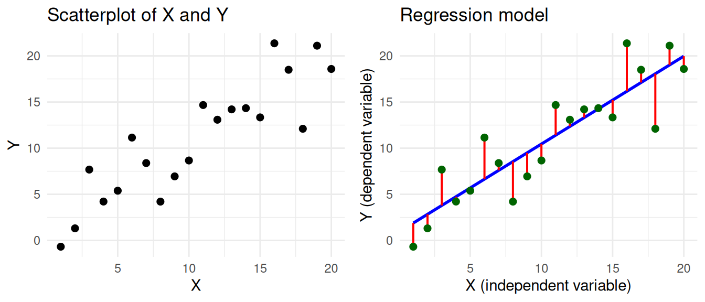
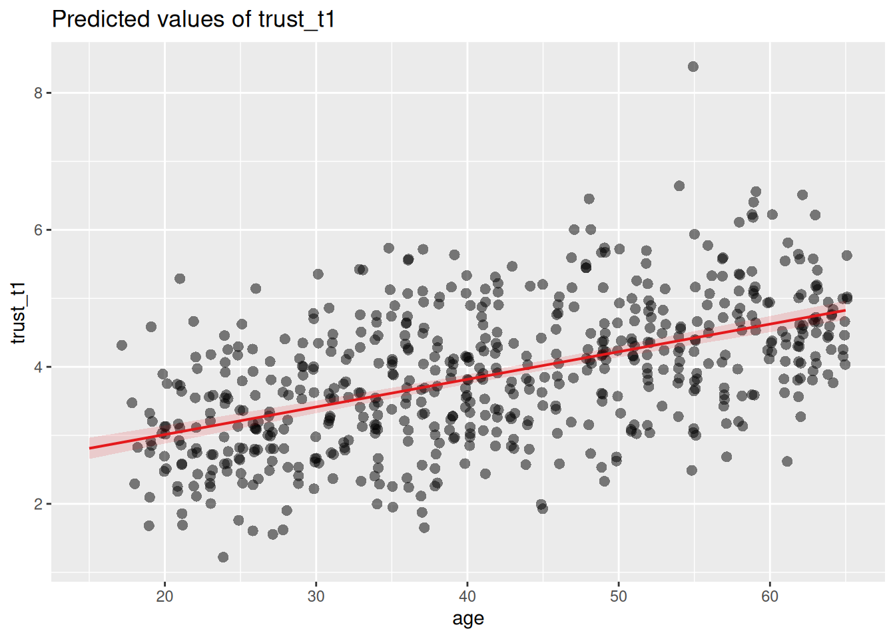
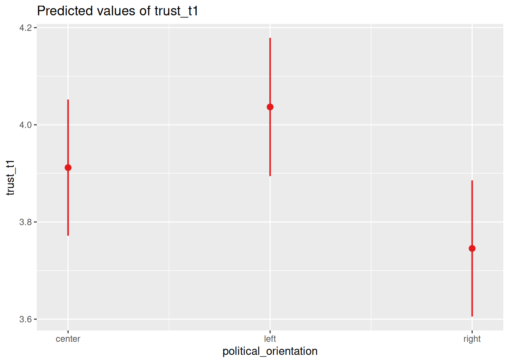

Linear regression
Predicting one variable from another
What is regression analysis?
Regression analysis is a statistical technique for predicting a dependent variable based on one or more independent variables. We use predict in a statistical sense, meaning that we are estimating how well we can guess the dependent variable given knowledge of the independent variable(s). The reason we want to do this is usually not to make actual predictions, but to understand the relationship between the variables. If one variable can predict another, it tells us something about how they might be related.
Let’s first look a how this prediction works for a single independent variable. This is also called simple linear regression. We have a dependent variable Y and an independent variable X, and we want to predict Y based on X. The goal is to find a mathematical formula that best describes their relationship. You can visually think of this as a scatterplot, where we draw a regression line such that the distance between the line and the data points is as small as possible.
This model can be described by a classic formula, called the regression equation. We’ve coloured the different parts of the equation according to the colours used in the visualization.
\[ \Large \color{Green} Y_i = \color{Blue} b_0 + b_1 X_i + \color{Red} \epsilon_i \]
- \(\color{Green} Y_i\) represents the real values of the dependent variable (\(Y_1, Y_2, ... Y_n\)) that we want to predict.
- \(\color{Blue} b_0 + b_1 X_i\) represents our prediction of y. It has two coefficients:
- \(\color{Blue} b_0\) is the intercept. This is the value of Y when X is zero.
- \(\color{Blue} b_1\) is the slope. This tells us how much Y changes for every unit increase in X.
- \(\color{Red} \epsilon_i\) represents the error. This is the distance between the predicted and the real value of Y.
For example, at \(X = 10\), the blue line predicting Y passes through the point \(Y = 10.45\). However, the real value of Y at this point is 8.66. So the error \(\epsilon_i\) at this point is \(8.66 - 10.45 = -1.79\).
The point of regression analysis is to find the values of \(b_0\) (intercept) and \(b_1\) (slope) that minimize the error. More specifically, it minimizes the sum of the squared errors (SSE), which is why this method is called least squares regression.
\[ SSE = \large \sum_{i=1}^{n} {\color{red} \epsilon_i^2} \]
Try it yourself! Change the values of the intercept and slope in the interactive widget below, and see how the regression line changes. The goal is to get the lowest possible SSE, which means that the line is as close as possible to the data points.
Spoiler
The optimal values for the intercept and slope are \(b_0 = 0.930\) and \(b_1 = 0.952\). This should give you an SSE of \(160.24\).
What can we do with it?
The primary goal of regression analysis is to understand the relationship between variables. It allows us to test hypotheses of the sort:
- Older people have more trust in journalists
- People on the political left have more trust in journalists than people on the political right
You might be wondering: can’t we already do the first one with a correlation test, and the second one with a t-test? The answer is yes, and one benefit of regression analysis is that it can do both these things in the same model. But more importantly, regression analysis can test both of these things at the same time, and account for the fact that age and political orientation are related to each other! If we know that younger people are more likely to be on the political left, then in order to test the effect of age on trust, we need to somehow account for political orientation.
In this tutorial we will show you how to use regression analysis to predict a person’s trust in journalists based on age and political orientation. The model we will be working towards looks like this:
\[ \large \color{Green} Y_i = \color{Blue} b_0 + b_1 X_{age} + b_2 X_{political\_left} + b_3 X_{political\_right} + \color{Red} \epsilon_i \]
Don’t worry if this doesn’t make sense yet! We’ll take it step by step.
- We’ll first show you how to do a simple linear regression, where we predict
trustbased onage. - Then we’ll show you how to include a categorical variable in the model, by predicting
trustbased onpolitical orientation. - Finally, we’ll show you how to include both
ageandpolitical orientationin the model at the same time.
How to use it
We’ll be using our standard (simulated) practice data, and a bit of tidyverse to load and clean the data. We’ll also be using the sjPlot package, which can create nice tables and plots of regression models.
library(tidyverse)
library(sjPlot)
d <- read_csv("https://tinyurl.com/R-practice-data") |>
mutate(age = if_else(age > 100, 2024 - age, age)) |>
select(age, political_orientation, trust_t1)
dRegression with numerical independent variable
Let’s start with the example of predicting trust in journalists based on age. For this we’ll be using the trust_t11 variable as the dependent variable, and the age variable as the independent variable. We can use the lm() function to create a linear regression model. Inside the lm() function we specify the formula for the regression, which has the format dependent ~ independent.
m <- lm(trust_t1 ~ age, data = d) The standard way to inspect the results is using the summary(m) function. This gives you all the information you need, but not in a very nice and readable format. We will therefore be using the tab_model() function from the sjPlot package to get a nice (APA ready) table of the results.
tab_model(m)| trust_t1 | |||
|---|---|---|---|
| Predictors | Estimates | CI | p |
| (Intercept) | 2.28 | 2.04 – 2.51 | <0.001 |
| age | 0.04 | 0.03 – 0.04 | <0.001 |
| Observations | 595 | ||
| R2 / R2 adjusted | 0.261 / 0.260 | ||
Backup plan if tab_model doesn’t work
The tab_model function by default shows the regression table in your viewer pane. If this for some reason doesn’t work, you can also use the use.viewer=F argument to show the table in your default web browser. This has the additional benefit that you can directly copy-paste the table into most text editors.
tab_model(m, use.viewer=F)The output of the regression analysis gives us values for the two coefficients: the (intercept) and the age variable. We get the coefficient estimates, and also the p-values that tell us if these coefficients are statistically significant. With tab_model we also get the confidence interval.
The coefficient for age tells us how much trust_t1 changes for every unit increase in age. Our age variable is in years, so the coefficient 0.04 tells us that for every year of age, trust in journalists increases on average by 0.04 points.
To get a better view of what this means in practice, it can be helpful to plot the regression line. The sjPlot package has a function plot_model() that can do this for us. Here we visualize the prediction (type = "pred") for the age variable (terms = "age").
plot_model(m, type = "pred", terms = "age")
Here the regression line shows the predicted values. At age 20 the predicted trust is around 3.05. For every year of age the predicted trust increases by 0.04 points, so by the time a person is 40 years old, the predicted trust is around 3.85. Visualizing effects like this can give readers (and yourself) a better understanding of how strong the effect really is.
Regression with categorical independent variable
The independent variable in a regression model can also be categorical. This allows us to include categorical variables in the model, similar to the t-test and ANOVA. Let’s see what this looks like when we predict trust_t1 based on the political_orientation variable, which has the values left, right and center.
We cannot directly use the values “left”, “right” and “center” in the regression equation, but we create so-called dummy variables. A dummy variable is a binary variable (i.e., it can only take the values 0 and 1) that represents whether something is the case or not. So if we want to test whether people that lean to the left have more trust in journalists, we can create a dummy variable that is 1 for people with orientation left, and 0 for all other people (i.e., right and center).
d = mutate(d, political_left = if_else(political_orientation == "left", 1, 0))
select(d, political_orientation, political_left)Now we can use this variable in the regression model.
m <- lm(trust_t1 ~ political_left, data = d)
tab_model(m)| trust_t1 | |||
|---|---|---|---|
| Predictors | Estimates | CI | p |
| (Intercept) | 3.83 | 3.73 – 3.93 | <0.001 |
| political left | 0.21 | 0.03 – 0.38 | 0.019 |
| Observations | 600 | ||
| R2 / R2 adjusted | 0.009 / 0.008 | ||
The interpretation of the results is almost identical to the previous example with the age variable. The only thing we need to keep in mind is that the political_left variable is binary, so it can only take the values 0 and 1. Accordingly, we don’t say that the trust in journalists increases by 0.21 points for every unit increase in political_left. Instead, we just say that people on the political left (political_left = 1) have on average a trust score that is 0.21 points higher than people that are not on the political left (political_left = 0).
Categories with more than two levels
In the previous example we created the dummy variable ourselves, but we can also let R do this for us. This is especially convenient if we have more than two categories. In addition, this also has the benefit that lm knows that the variable is categorical, which enables us (among other things) to visualize the model propertly.
If an independent variable is of the character or factor type, R will automatically create dummy variables for us.
We first need to make sure that our variable is of the factor type2. The difference between a character and a factor is that in a factor we explicitly tell R what the categories are, and what the order of the categories is. The order is important, because the first category will be the reference category (more on this later) in the regression model. To transform our political_orientation variable to a factor we can use the factor() function, and provide the levels argument to specify the order of the categories.
d <- mutate(d, political_orientation = factor(political_orientation, levels=c('center','left','right')))Now, when we use the political_orientation variable in the regression model, R will automatically create the dummy variables for us.
m <- lm(trust_t1 ~ political_orientation, data = d)
tab_model(m)| trust_t1 | |||
|---|---|---|---|
| Predictors | Estimates | CI | p |
| (Intercept) | 3.91 | 3.77 – 4.05 | <0.001 |
| political orientation [left] |
0.12 | -0.07 – 0.32 | 0.220 |
| political orientation [right] |
-0.17 | -0.36 – 0.03 | 0.100 |
| Observations | 600 | ||
| R2 / R2 adjusted | 0.014 / 0.010 | ||
Notice that there are now two coefficients for the political_orientation variable: one for left and one for right. Why 2, and not 3? This is because when we have a categorical variable with k levels, we only need k-1 coefficients to represent all the levels. If we know that a person is not in the left category, and not in the right category, then we know that the person must be in the center category.
| political_orientation | is_left | is_right |
|---|---|---|
| left | 1 | 0 |
| right | 0 | 1 |
| center | 0 | 0 |
The center category is now the reference category. That is, the center category is the category that all other categories are compared to. So the political_orientation [left] coefficient tells us that trust is for people in the left category is 0.12 points higher than for people in the center category, but this difference is not significant (p = 0.220) The political_orientation [right] coefficient tells us that trust is for people in the right category is 0.17 points lower than for people in the center category, but this difference is also not significant (p = 0.100).
Determining what reference category to use
In the current model we cannot directly compare the left and right categories, because the center category is the reference category. This makes it important to choose a reference category that makes sense for your research question. To determine the reference category, you can change the order of the levels in the factor() function. The first level will always be the reference category. So in the following example, the left category is the reference category.
d2 <- mutate(d, political_orientation = factor(political_orientation, levels=c('left','center','right')))
lm(trust_t1 ~ political_orientation, data = d2) |>
tab_model()| trust_t1 | |||
|---|---|---|---|
| Predictors | Estimates | CI | p |
| (Intercept) | 4.04 | 3.89 – 4.18 | <0.001 |
| political orientation [center] |
-0.12 | -0.32 – 0.07 | 0.220 |
| political orientation [right] |
-0.29 | -0.49 – -0.09 | 0.004 |
| Observations | 600 | ||
| R2 / R2 adjusted | 0.014 / 0.010 | ||
When we visualize the prediction for a categorical variable, we get a plot that shows the predicted value for each category, with the confidence interval.
plot_model(m, type = "pred", terms = "political_orientation")
Here we see that (in our simulated data) people on the political left have the highest trust in journalists, followed by people in the center, and then people on the political right. However, based on the model we know that the difference between left and center is not significant, and neither is the difference between center and right.
Regression with multiple independent variables
Now, we can finally get to the most interesting part: using multiple independent variables in the regression model. This is called multiple regression, and it allows us to test the effect of multiple variables on the dependent variable at the same time. The formula for using multiple independent variables is: dependent ~ independent1 + independent2 + ....
We’ll be using both the age and political_orientation variables. As we mentioned earlier, by including both variables in the model we can test the effect of age on trust while controlling for political_orientation, and vice versa. To show you how this works, we’ll create two models, and show them side by side by plugging them both into the tab_model() function.
m1 <- lm(trust_t1 ~ political_orientation, data = d)
m2 <- lm(trust_t1 ~ political_orientation + age, data = d)
tab_model(m1, m2)| trust_t1 | trust_t1 | |||||
|---|---|---|---|---|---|---|
| Predictors | Estimates | CI | p | Estimates | CI | p |
| (Intercept) | 3.91 | 3.77 – 4.05 | <0.001 | 2.11 | 1.87 – 2.35 | <0.001 |
| political orientation [left] |
0.12 | -0.07 – 0.32 | 0.220 | 0.26 | 0.09 – 0.42 | 0.003 |
| political orientation [right] |
-0.17 | -0.36 – 0.03 | 0.100 | -0.42 | -0.59 – -0.25 | <0.001 |
| age | 0.04 | 0.04 – 0.05 | <0.001 | |||
| Observations | 600 | 595 | ||||
| R2 / R2 adjusted | 0.014 / 0.010 | 0.330 / 0.327 | ||||
In the first model, we did not see any effect of having a left or right political orientation compared to the center (reference) category. But once we include the age variable in the model, both the left and right categories show do show a significant effect on trust!
The reason for this is that the age variable is related to both the political_orientation variable and the trust variable.3 Younger people have less trust in journalists, but are also more likely to be on the political left. Therefore, if we do not control for age, the positive effect of being on the political left is suppressed by the negative effect of being younger.
If this sounds confusing, don’t worry, because you’re in good company! Thinking about how the effect of independent variables on the dependent variable depends on the relation between the independent variables can make your head spin. But for better or worse, this is how the world works, and this is why we need sophisticated statistical tools to help us understand it.
Footnotes
We use the
trust_t1variable here, because for the current analysis we are not interested in the effect of the experimental group. Sincetrust_t1is measured before the experiment, it is not influenced by the experiment.↩︎You can also use a
charactervariable directly, but thefactortype is more appropriate for categorical variables. It also let’s you specify the order of the categories, which is important for regression analysis because it let’s you specify the reference category.↩︎Remember that this is a simulated dataset, so in this case we know the true relationships between the variables. But these types of complex relationships are very common in real data.↩︎